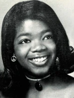
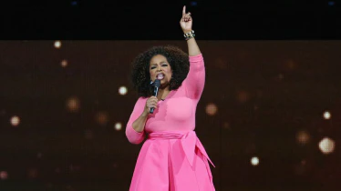

Oprah Winfrey, d’arrière-arrière-petite fille d’esclave à la femme noire milliardaire la plus influente au monde. Malgré son enfance stricte et difficile, elle se hissera dans les plus hauts échelons des médias pour mener son combat à bien, celui des femmes dans la société.
Biographie

Photo de oprah winfrey
Education
Abandonnée par sa mère qui la traitait comme un enfant non-désiré, elle fut donc élevée par ses grands-parents, éduquant à la vieille école où le châtiment corporel et mental était de mise pour l’éducation de la petite Oprah.
Conditions de vie
Les conditions de vie chez sa mère étaient invivables, la femme vivant avec sa mère ne voulant pas d’un enfant sous son toit, elle fut forcée de dormir sous le porchela nuit au froid et avec peu de couverture. Oprah reviendra plus tard dans sa vie sur ce moment, en citant qu’elle se sentait comme « un fardeau » et qu’elle ne méritait pas de vivre.
Le salut
C’est finalement grâce à son père qu’elle put enfin sortir la tête de l’eau.
Grâce à sa grand-mère, elle apprit très tôt à lire et lorsque son père la récupéra,
il misa tout sur l’éducation de sa fille, que ce soient des bourses
ou les études supérieures il fit tout ce qui était en son pouvoir
pour lui permettre de rattraper le temps perdu.
Elle démarra ainsi sa vie d’adulte, blessée mentalement mais en vie.
Parcours professionnel
Oprah Winfrey interview Lindsay Lohan
Début de carrière
Oprah Winfrey commença sa carrière dans des petites radios locales
puis régionales de 1970 à 1975 jusqu’à être la première femme noire
présentatrice d’une émission télévisée à Nashville.
Elle se fera néanmoins renvoyer par le producteur raciste,
lui disant qu’elle ne mérite pas sa place ici, en tant que femme noire.
C’est ainsi qu’elle se rendra à Chicago pour présenter un programme matinal nommé WLS-TV.
Ascension
Son influence sur la petite émission sera telle qu’elle détrônera,
en terme d’audience, le talkshow le plus regardé de Chicago nommé « Toutefois ».
La date qui changera sa vie à tout jamais fut le 8 septembre 1986, lors de la
première émission de « The Oprah Winfrey’s Show » qui fut diffusé pendant plus
de 25 ans , comportant plus de 4500 épisodes et ayant accueilli plus de 28000
invités des moins connus jusqu’à Lance Armstrong et Michael Jackson.
Oprah s’essayera au cinéma, retournera à la radio puis finalement c’est en 2011
qu’elle arrêtera de présenter son émission phare « The Oprah Winfrey show »,
pour se lancer dans sa propre chaîne OWN (Oprah Winfrey Network).
Implication dans le féminisme

Oprah Winfrey prononcant un discours
Résolution
Oprah ayant eu une enfance très compliquée et un accès à l’éducation inexistant
lors de sa jeunesse, elle prit la décision d’en faire son combat avec pour but
d’aider les jeunes de filles de 8 à 12 ans à pouvoir aller à l’école à Johannes Burg.
Elle fut aussi une des premières femmes à se dresser contre les normes de beauté
à propos du corps (corpulence, poids, formes), érigées par la société pendant
ces dizaines, centaines d’années. Oprah a aussi apporté son soutien et
son témoignage à la création d’une loi visant à créer un dossier
national répertoriant tous les pédophiles, dans le but de protéger
d’éventuelles futures victimes, potentielles vies gâchées.
Humanitaire
Elle a aussi supporté de nombreuses autres causes comme des partis pour
sauver les femmes victimes des guerres en Iraq. C’est ainsi que son combat
se centre principalement autour de la condition de vie des femmes.
Récompenses
Oprah Winfrey prononcant un discours
Elle obtiendra beaucoup de récompenses lors de sa vie. Quand elle était adolescente,
elle fut la première femme noire à avoir remporté le concours de « Miss Fire Prevention »
à Nashville. En 2011 elle obtient le « Career Achievement Award » qui la récompense de
sa carrière fulgurante et inspirante.
Consécration
En 2013 elle reçoit des mains du président Barack Obama la médaille de la liberté,
et finalement, en 2018, elle obtient le « Cecil B. DeMille Award » qui récompense
les célébrités pour leur carrière tout le long de leurs vies et leur implication
dans l’humanitaire et le social.
Au total, elle recevra 17 Emmy Awards pour ses émissions de télévision ce qui la hisse
au rang d’icône et héroïne nationale en terme d’influence.
Ce qu'il faut retenir
Nous pouvons donc dire que Oprah Winfrey a su surmonter en partie les traumatismes
de son passé pour se hisser comme la femme africaine-américaine la plus influente
dans les médias et dans le monde entier, tout en gardant les pieds sur terre en
continuant à aider les personnes dans le besoin. Oprah Winfrey n’est alors pas
qu’un cadeau pour la cause féministe mais un cadeau pour le monde entier.
Lire l’article sur Marguerite Durand
Lire l’article sur les suffragettes
Frise chronologique
1967
1971
1975
2017
Loi neuwirth sur la contraception, autorise la contraception
Le manifeste des “343 salopes” sort et fait l’effet d’une bombe
Légalisation de l’IVG en grande partie grâce à Simone Veil